S1 · Anatomy · Summary
Upper limb bones (diagrams)
- Essentials
- Whole limb
- Girdle & clavicle
- Scapula
- Humerus
- Radius & ulna
- Carpus & hand
- Exam traps
- Self-check
How to use this page
The PDF only gives the drawings with empty blanks. Below each drawing is the answer key (English, French in
brackets). The PDF itself doesn't print these names. They were identified from the drawings, and the 🎯 boxes come
from the official keys of past exams, which test details the drawings don't show. "?" marks a label whose line
is ambiguous — check it against your teacher's corrected copy.
If you remember only this
- Scapula: 3 borders — superior (cervical), lateral (axillary), medial (spinal). Its supero-lateral angle carries the glenoid cavity (faces laterally) on the neck, and the coracoid process.
- Clavicle, inferior surface: costal tuberosity medially, subclavius groove in the middle, conoid tubercle and trapezoid line laterally.
- Humerus: the trochlea is the medial part of the humeral condyle (capitulum lateral); the radial nerve groove on the dorsal surface runs downward and outward; diaphysis projections = crests of the greater and lesser tubercles + deltoid tuberosity.
- Radius (lateral): head = fovea (cupula) on top + articular circumference around the rim; radial tuberosity → biceps brachii; medial border = interosseous border.
- Ulna (medial): olecranon vertical and posterior, coronoid process horizontal and anterior; the coronoid carries the radial notch and the ulnar tuberosity.
- Carpus: proximal row lateral → medial scaphoid, lunate, triquetrum, pisiform; distal row trapezium, trapezoid, capitate, hamate (medial).
1. Bones of the thoracic limb (Les os du membre thoracique) p. 1
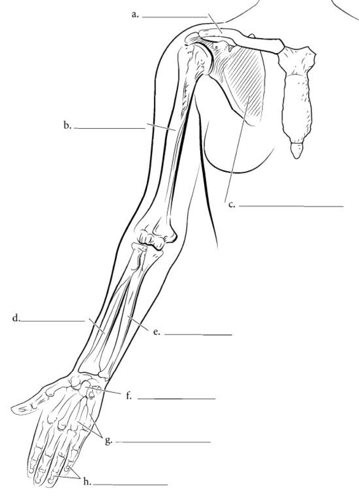
| Label | Structure |
|---|---|
| a | Clavicle |
| b | Humerus (arm) |
| c | Scapula (omoplate), behind the thorax |
| d | Radius — lateral, thumb side |
| e | Ulna (cubitus) — medial, little-finger side |
| f | Carpus (wrist) |
| g | Metacarpals |
| h | Phalanges |
2. Shoulder girdle and clavicle p. 2 2023-24 · 2025-26
Shoulder girdle, seen from above (La ceinture scapulaire)
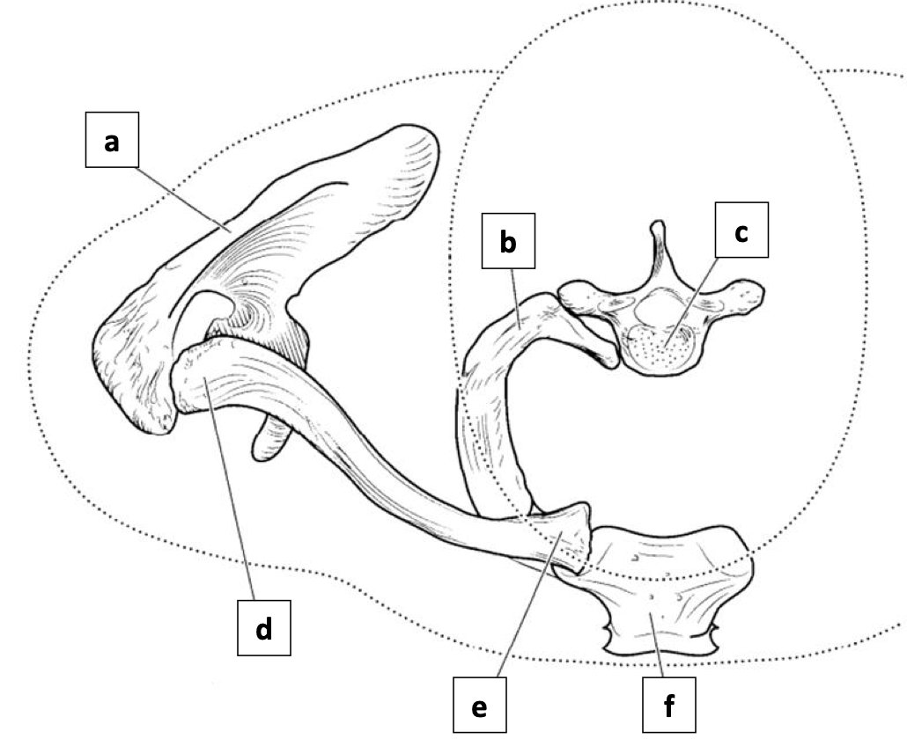
| Label | Structure |
|---|---|
| a | Scapula (acromion and spine seen from above) |
| b | 1st rib |
| c | Body of a thoracic vertebra |
| d | Clavicle |
| e | Sternal end of the clavicle / sternoclavicular joint ? |
| f | Manubrium of the sternum |
Clavicle, inferior view (vue inférieure)
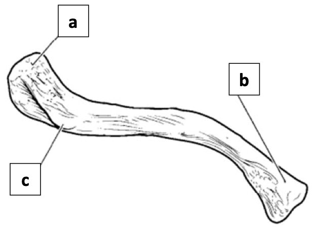
| Label | Structure |
|---|---|
| a | Conoid tubercle (lateral end) |
| b | Costal tuberosity (medial end) |
| c | Trapezoid line (lateral end) |
🎯 Clavicle — official keys
- A long bone that forms the shoulder girdle with the scapula.
- Inferior (caudal) surface (2025-26): subclavius groove in the middle, costal tuberosity medially, trapezoid line (for the trapezoid ligament), conoid tubercle (for the conoid ligament).
- 2023-24: costal tuberosity on the medial part of the caudal surface; the trapezoid ligament attaches to the ventral tubercle of the caudal surface.
3. The scapula p. 3 2023-24 · 2024-25 · 2025-26
Thin, flat, triangular, asymmetric bone on the postero-superior part of the thorax.
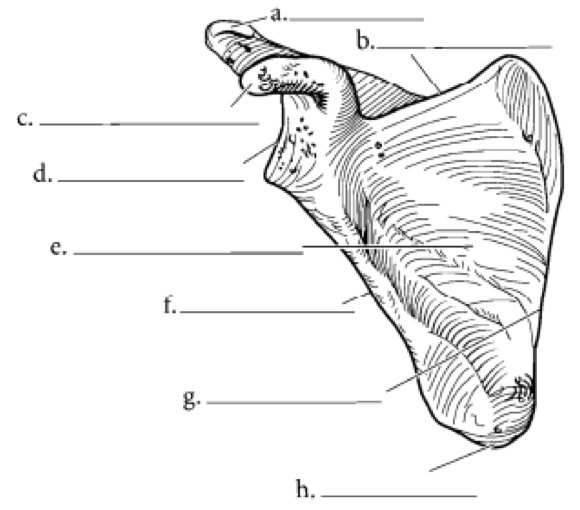
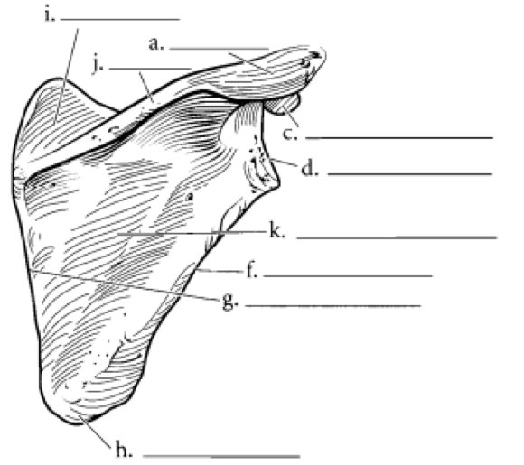
| Label | Structure | Seen on |
|---|---|---|
| a | Acromion | both |
| b | Superior (cervical) border | anterior |
| c | Coracoid process | both |
| d | Glenoid cavity | both |
| e | Subscapular fossa (anterior surface) | anterior |
| f | Lateral (axillary) border | both |
| g | Medial (spinal) border | both |
| h | Inferior angle | both |
| i | Supraspinous fossa | posterior |
| j | Spine of the scapula | posterior |
| k | Infraspinous fossa | posterior |
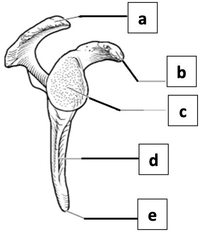
| Label (lateral view) | Structure |
|---|---|
| a | Acromion |
| b | Coracoid process |
| c | Glenoid cavity |
| d | Lateral (axillary) border |
| e | Inferior angle |
🎯 Scapula — official keys
- 3 borders (2024-25): superior = cervical, lateral = axillary, medial = spinal.
- Supero-lateral angle (2024-25): glenoid cavity, neck of the scapula, coracoid process — not the pillar, not the coracoid notch.
- The glenoid cavity is carried by the neck (2023-24) and faces laterally (2025-26).
- The coracoid process gives attachment to the coracoclavicular ligament (2025-26).
4. The humerus (anterior and posterior views) p. 4 2023-24 · 2025-26
Long bone of the arm: articulates above with the scapula, below with the two forearm bones.
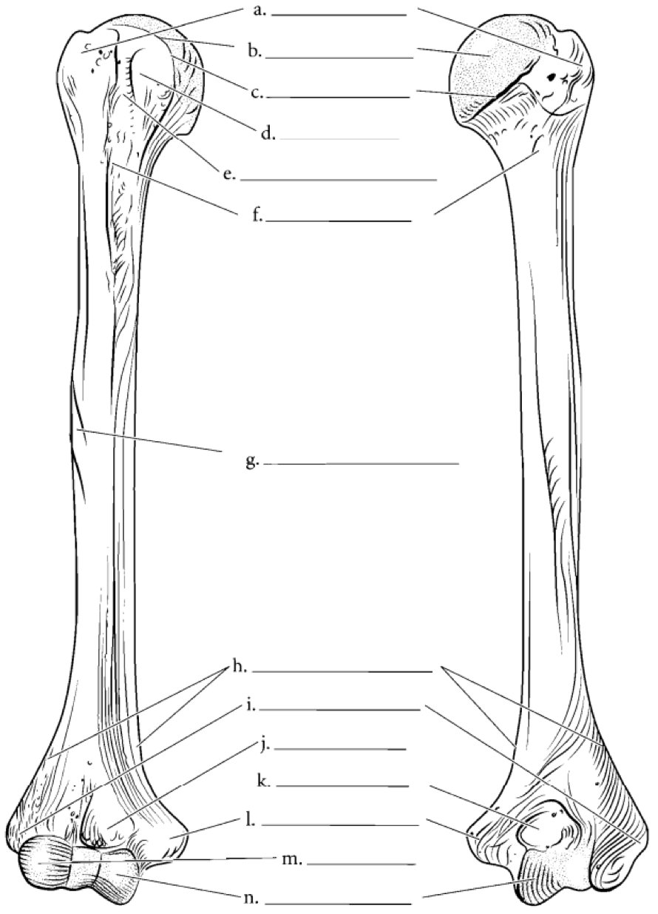
| Label | Structure |
|---|---|
| Proximal epiphysis | |
| a | Greater tubercle (trochiter) — lateral |
| b | Head of the humerus |
| c | Anatomical neck — groove bordering the head |
| d | Lesser tubercle (trochin) — anterior only |
| e | Intertubercular (bicipital) groove ? |
| f | Surgical neck — below the tubercles |
| Shaft | |
| g | Deltoid tuberosity — lateral |
| Distal epiphysis | |
| h | Supracondylar ridges (lateral and medial borders) ? |
| i | Lateral epicondyle |
| j | Coronoid fossa — anterior |
| k | Olecranon fossa — posterior |
| l | Medial epicondyle |
| m | Capitulum — lateral, rounded |
| n | Trochlea — medial |
🎯 Humerus — official keys
- The radial nerve groove on the dorsal surface runs obliquely downward and outward (2023-24).
- The trochlea occupies the medial part of the humeral condyle (2023-24).
- Projections of the diaphysis (2025-26): crest of the greater tubercle, crest of the lesser tubercle, deltoid tuberosity. Not the radial nerve groove (a groove), not the medial epicondyle (on the epiphysis).
Memory trick
Anatomical neck hugs the head; surgical neck is lower, under the tubercles. Capitulum ↔ radius (both
lateral); trochlea ↔ ulna (both medial).
5. Forearm bones: radius and ulna p. 5 2023-24 · 2024-25 · 2025-26
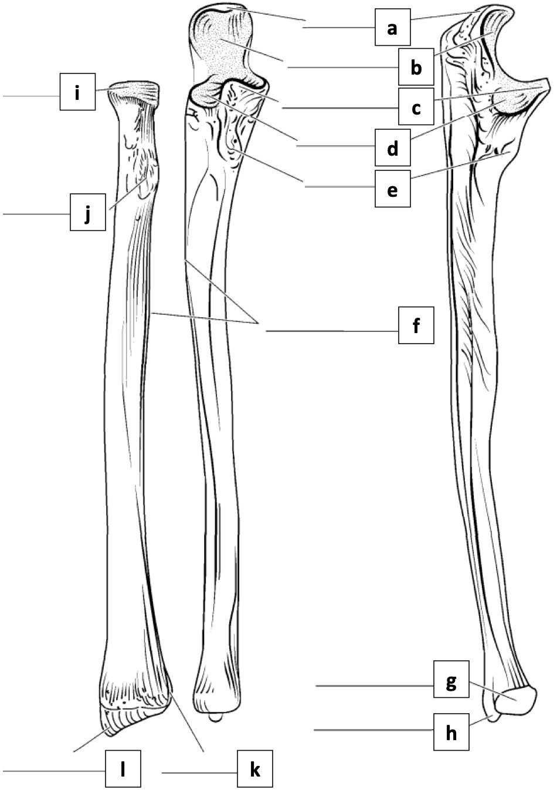
| Label | Structure |
|---|---|
| Ulna | |
| a | Olecranon |
| b | Trochlear notch |
| c | Coronoid process |
| d | Radial notch |
| e | Ulnar tuberosity |
| g | Head of the ulna (distal) |
| h | Styloid process of the ulna |
| Both bones | |
| f | Interosseous borders (facing each other) |
| Radius | |
| i | Head of the radius |
| j | Radial (bicipital) tuberosity |
| k | Ulnar notch (medial side of the distal end) |
| l | Styloid process of the radius (lateral) |
🎯 Radius — official keys
| Part | What's true |
|---|---|
| Head (2024-25) | Radial cupula (fovea) = its superior surface; articular circumference = its rim. The radial tuberosity is not part of the head. |
| Radial tuberosity (2023-24) | Attachment of the biceps brachii. |
| Medial border (2025-26) | = interosseous border; faces the lateral border of the ulna; attaches the interosseous membrane. |
| Distal end — 5 surfaces (2024-25) | Ventral smooth, dorsal hollowed by grooves, inferior articular and triangular; the inferior surface articulates with the 1st (proximal) row of the carpus (2023-24). |
🎯 Ulna — official keys
- Proximal epiphysis (2024-25): olecranon = vertical and posterior; coronoid process = horizontal and anterior.
- Trochlear notch = anterior surface of the olecranon + superior surface of the coronoid process (2023-24).
- The coronoid process carries the radial notch and the ulnar tuberosity (2025-26); the ulnar tuberosity marks its antero-inferior surface (2023-24).
Memory trick
The radial notch is on the ulna (where the radius sits); the ulnar notch is on the radius. Each notch is
named after the bone that fits into it.
6. Carpus and skeleton of the hand p. 6 2024-25 · 2025-26
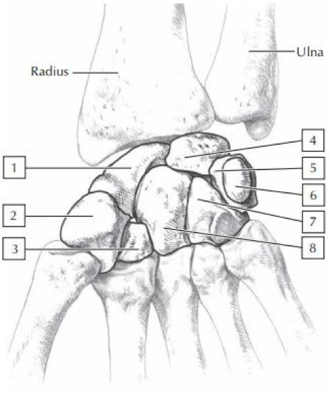
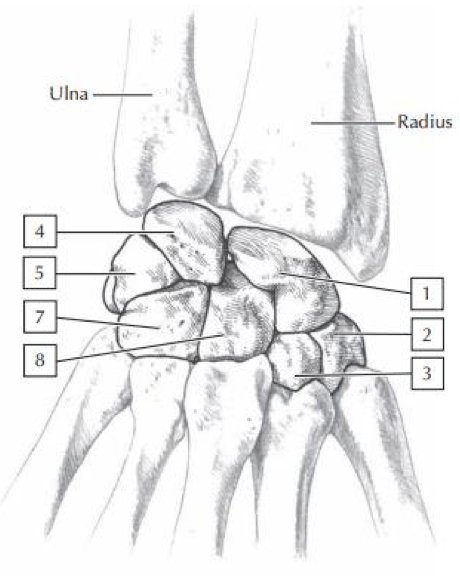
| # | Bone | Row |
|---|---|---|
| 1 | Scaphoid | proximal, lateral |
| 4 | Lunate (semi-lunaire) | proximal |
| 5 | Triquetrum (pyramidal) | proximal |
| 6 | Pisiform | proximal, medial (on the triquetrum) |
| 2 | Trapezium | distal, lateral |
| 3 | Trapezoid | distal |
| 8 | Capitate (grand os) | distal, middle |
| 7 | Hamate (os crochu) | distal, medial |
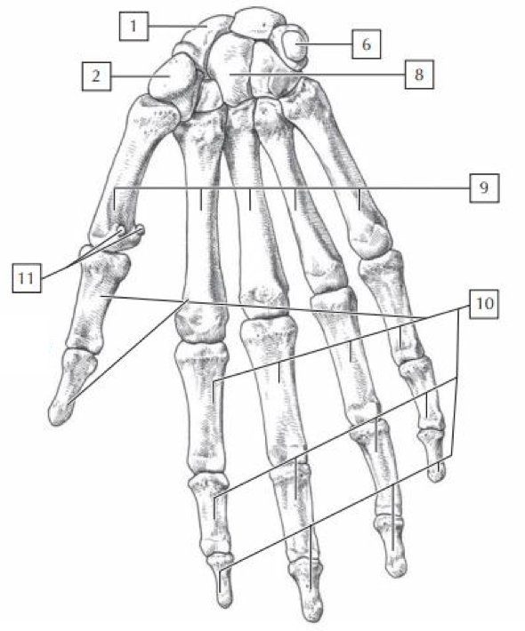
Memory trick — lateral → medial
Proximal row: Scaphoid · Lunate · Triquetrum · Pisiform. Distal row: Trapezium · Trapezoid ·
Capitate · Hamate — "She Looks Too Pretty, Try To Catch Her".
Trapezium sits under the thumb.
🎯 Carpus — official keys
Scaphoid = carpus, proximal row, lateral (2024-25 · 2025-26). Hamate = medial, distal row (2025-26).
Exam traps
Don't fall for these
- Scapula: "the medial border is the thickest", "the lateral border is the longest and thickest", "the tip lies opposite the 8th rib", "the cervical border shows the coracoid notch medially", "the pillar delimits the dorsal surface" — all marked false. 2 years
- Supero-lateral angle: not the pillar, not the coracoid notch. "The neck supports the coracoid process", "the supraglenoid tubercle receives the triceps", "the scapular notch passes the suprascapular artery and nerve" — false.
- Clavicle: the acromial articular surface is not on the inferior surface; "costoclavicular ligament on the cranial surface", "conoid tubercle lateral and anterior on the ventral surface", "anterior border concave medially" — false.
- Humerus: proximal epiphysis is not entirely articular; the distal epiphysis articulates with both forearm bones; "bicipital groove extends the antero-lateral surface" — false.
- Radius: proximal epiphysis has more than one articular surface; the fovea does not articulate with the medial part of the condyle (that's the trochlea's side); the styloid process is not on the medial surface; the ulnar notch is not on the inferior surface; the ventral surface is smooth, the dorsal one grooved. 3 years
- Radius medial border does not separate the anterior and lateral surfaces and does not continue on both epiphyses.
- Ulna: olecranon is not horizontal/anterior, coronoid is not vertical/posterior; the radial notch is not on the medial surface; the ulnar head has more than one articular surface; the ulnar notch and styloid process are not on the coronoid. 3 years
- Carpus: scaphoid is not metacarpus, not distal row, not medial; trapezoid is distal; the capitate is in the distal row; the pisiform does not articulate with the lunate. 2 years
Self-check
Name the 3 borders of the scapula with their other names.
Superior = cervical, lateral = axillary, medial = spinal.
What is on the supero-lateral angle of the scapula?
Glenoid cavity (faces laterally), neck of the scapula (carries it), coracoid process (coracoclavicular ligament).
What does the spine of the scapula separate?
The supraspinous fossa (above) from the infraspinous fossa (below), on the posterior surface.
List what the inferior surface of the clavicle shows, medial to lateral.
Costal tuberosity (medial), subclavius groove (middle), conoid tubercle and trapezoid line (lateral).
Anatomical vs surgical neck of the humerus?
Anatomical neck borders the head; surgical neck is below the tubercles.
Which projections are on the diaphysis of the humerus?
Crest of the greater tubercle, crest of the lesser tubercle, deltoid tuberosity.
Which fossa is anterior, which posterior, on the distal humerus?
Coronoid fossa anterior, olecranon fossa posterior.
What makes up the radial head?
The fovea (cupula) on top and the articular circumference around the rim.
Describe the 3 surfaces of the radius's distal end that the exam asked about.
Ventral smooth, dorsal hollowed by grooves, inferior articular and triangular (with the proximal carpal row).
Olecranon and coronoid process: orientation?
Olecranon vertical and posterior; coronoid process horizontal and anterior.
Which structures are on the coronoid process of the ulna?
Radial notch and ulnar tuberosity.
Give the carpal bones, proximal then distal row, lateral to medial.
Scaphoid, lunate, triquetrum, pisiform; trapezium, trapezoid, capitate, hamate.
Why is number 6 missing in the dorsal view of the carpus?
It's the pisiform, on the palmar side of the triquetrum — hidden from behind.